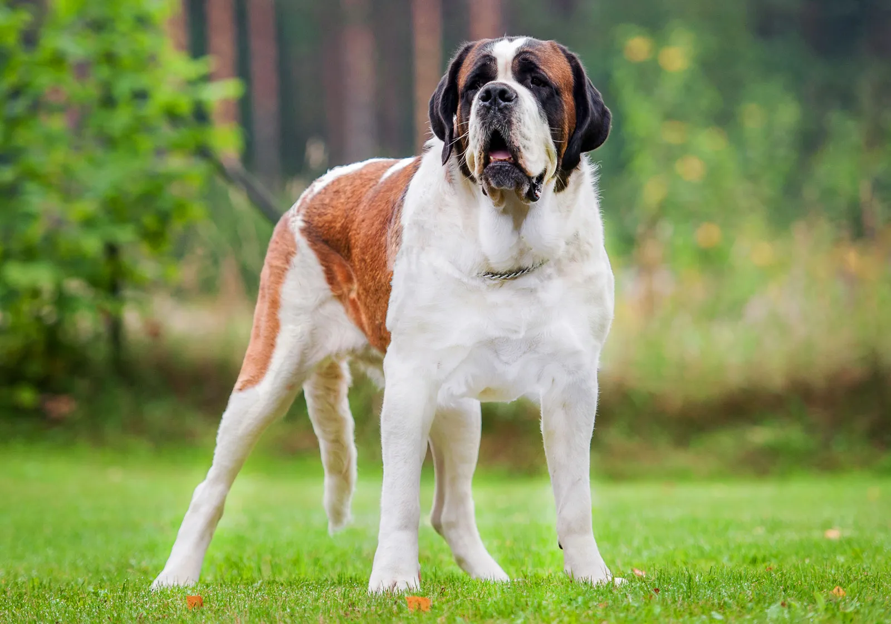

The classic northern dogs, Siberian huskies are friendly and intelligent but somewhat independent and stubborn. They thrive on human company, but need firm, gentle training from puppyhood.
Highly intelligent and sociable, the cockapoo dog combines the sweet nature of the cocker spaniel with the trainability and good humor of the poodle.

Because golden retrievers are easy to please, they respond positively to obedience training. They complement this trait by being playful, affectionate and even-tempered.

The beagle is a breed of small scent hound, similar in appearance to the much larger foxhound. The beagle was developed primarily for hunting hare, known as beagling.

The beagle is a breed of small scent hound, similar in appearance to the much larger foxhound. The beagle was developed primarily for hunting hare, known as beagling.

The Rottweiler is a breed of domestic dog, regarded as medium-to-large or large. The dogs were known in German as Rottweiler Metzgerhund, meaning Rottweil butchers' dogs, because their main use was to herd livestock and pull carts laden with butchered meat to market.

The Pug is a breed of dog originally from China, with physically distinctive features of a wrinkly, short-muzzled face, and curled tail. The breed has a fine, glossy coat that comes in a variety of colors, most often fawn or black, and a compact, square body with well developed and thick muscles all over the body.

The St. Bernard or Saint Bernard is a breed of very large working dog from the Western Alps in Italy and Switzerland. They were originally bred for rescue work by the hospice of the Great St Bernard Pass on the Italian-Swiss border.
The Yorkshire Terrier is a British breed of toy dog of terrier type. It is among the smallest of the terriers and indeed of all dog breeds, with a weight of no more than 3.2 kg. It originated in the nineteenth century in the English county of Yorkshire, for which it is named.